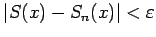
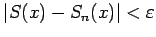
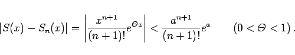
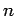
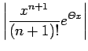
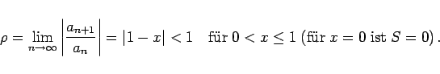
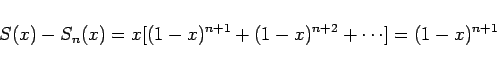
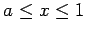

Inhalt Index DeskTop Bronstein

 Unendliche Reihen Funktionenreihen Gleichmäßige und ungleichmässige Konvergenz
Unendliche Reihen Funktionenreihen Gleichmäßige und ungleichmässige Konvergenz


In Übereinstimmung mit der Definition des Grenzwertes einer Zahlenfolge und einer Reihe konvergiert die Reihe (7.67) in einem gegebenen Gebiet, wenn für eine beliebige Zahl  eine ganze Zahl N derart angegeben werden kann, daß die Ungleichung  für alle n > N erfüllt ist. Für Funktionenreihen können dabei zwei Fälle unterschieden werden:
eine ganze Zahl N derart angegeben werden kann, daß die Ungleichung  für alle n > N erfüllt ist. Für Funktionenreihen können dabei zwei Fälle unterschieden werden:
| Beispiel A |
|
Die Reihe |
mit der Summe ex konvergiert für alle Werte von x. Die Konvergenz ist hier für jedes beliebige endliche Gebiet von x gleichmäßig, und es gilt für |x|<a und unter Benutzung des Restgliedes nach der Formel von MACLAURIN für die Reihe die Ungleichung
|  | (7.72b) |
Da (n + 1)! schneller als an+1 wächst, wird der Ausdruck auf der rechten Seite der Ungleichung für hinreichend großes , das unabhängig von x ist, kleiner als . Für die gesamte Zahlengerade gibt es hier allerdings keine gleichmäßige Konvergenz: Wie groß man n auch immer wählt, es wird sich stets eine Zahl x derart finden lassen, daß  größer ist als ein beliebiges vorgegebenes .
| Beispiel B |
|
Für alle x-Werte im abgeschlossenen Intervall [0,1] konvergiert die Reihe |
da in Übereinstimmung mit der Schlußfolgerung aus dem Kriterium von D'ALEMBERT gilt:
|  | (7.73b) |
Die Konvergenz ist aber ungleichmäßig, weil
|  | (7.73c) |
gilt und, wie groß auch immer n gewählt wird, stets ein hinreichend kleines x gefunden werden kann, für das (1-x)n+1 beliebig nahe bei 1 liegt, d.h. nicht kleiner als ist. Gleichmäßige Konvergenz liegt im Intervall  aber mit der Einschränkung 0<a<1 vor.
gleichmäßig, wenn es eine konvergente Reihe mit konstanten Gliedern
gibt, so daß für alle x-Werte in diesem Gebiet die Ungleichung
erfüllt werden kann. Man nennt dann (7.74b) eine Majorante zur Reihe (7.74a).